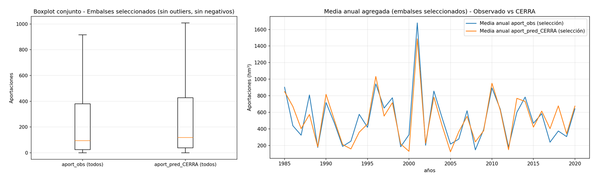
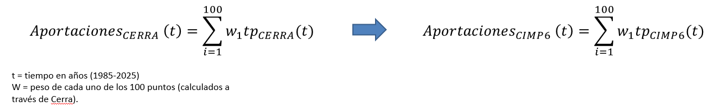
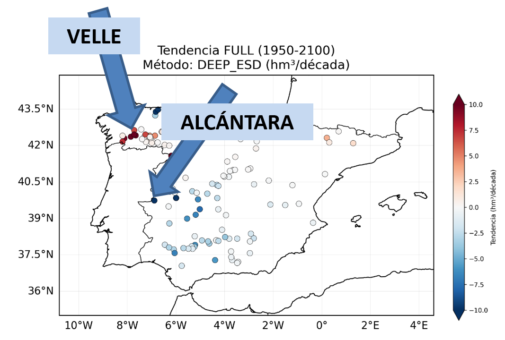

RESULTS
First, a comparative study of observed contribution data and those obtained from the CERRA-Land reanalysis was carried out. Results show good correlation (always greater than 0.9) and no significant differences.

Subsequently, downscaled CMIP6 models using different downscaling methods were validated against CERRA-Land contribution data. Mean values of all datasets for the 1981-2010 study period are very similar.

After verifying the good results of the validation period, the function obtained with CERRA-Land is applied to precipitation data from CMIP6 models.

In general terms, no clear trend is observed regarding a hypothetical decrease in contributions in the future climate. CERRA-Land describes more pronounced oscillations in contributions than the models.

In areas of the southwest, a decrease in contributions is observed; in the northwest, an increase is seen, especially in areas near Galicia. DeepESD shows the greatest increases in areas of the northwest of the Iberian Peninsula. QDM, RAW, and XGB show the greatest decreases in contributions in the south.



Extreme values (p5-p95) show that overall there are no significant changes, although a slight decrease in extreme p95 values is observed at the end of the 21st century according to the SSP5-8.5 scenario.